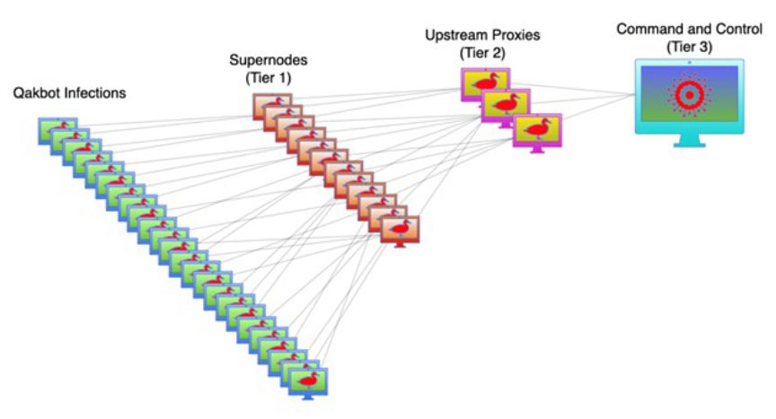
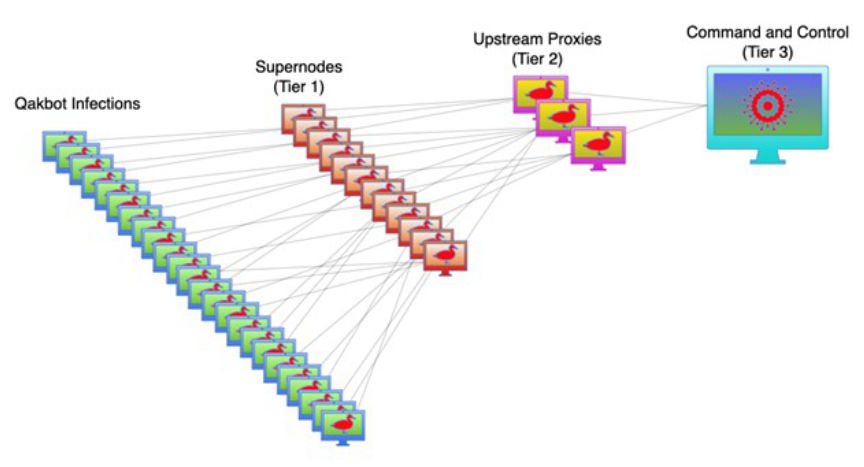

Millions in Crypto Seized in Qakbot Takedown
Operation "Duck Hunt," an international operation led by the FBI and DoJ dismantled the Qakbot botnet and seized close to $9 million in crypto from the botnet's operators.

According to court documents, from at least 2008, Qakbot also known as "Qbot" and "Pinkslipbot," made it possible for threat actors to gain unauthorized access to victims' networks. The cybercriminals then used it to deliver additional malware including ransomware or to launch other forms of attacks.
Most prolific ransomware groups including Conti, ProLock, Egregor, REvil, MegaCortex, and Black Basta, have used Qakbot to gain initial access to their victims' networks.
The investigators established that the ransomware groups sent Qakbot administrators a percentage of the ransom payments they received after executing attacks.
Gaining access to Qakbot's infrastructure gave the investigators access to files related to the operation of the botnet. One of the files, named "payments.txt," included details of ransomware attacks including, the victim's name, the ransomware attacker, and the amount in bitcoin the Qakbot administrators received as payment.
The investigators also found a list of bitcoin addresses in another file named "license.txt." Blockchain analysis revealed that the addresses had received bitcoin from addresses that had received ransom payments.
The investigators established that between October 2021 and April 2023, Qakbot administrators received fees believed to have originated from approximately $58 million in ransom payments.
The investigators took over Qakbot's infrastructure on August 25, 2023. They then redirected Qakbot's traffic through servers controlled by the FBI. The servers then instructed the compromised devices to download uninstaller program that removed the Qakbot malware.
In total, the investigators identified 700,000 computers worldwide, including more than 200,000 in the United States, infected with Qakbot.
In addition to uninstalling the malware from victims' computers, the investigators seized $8.6 million in crypto from Qakbot administrators.

How Qakbot was structured
According to court documents, from at least 2008, Qakbot also known as "Qbot" and "Pinkslipbot," made it possible for threat actors to gain unauthorized access to victims' networks. The cybercriminals then used it to deliver additional malware including ransomware or to launch other forms of attacks.
Most prolific ransomware groups including Conti, ProLock, Egregor, REvil, MegaCortex, and Black Basta, have used Qakbot to gain initial access to their victims' networks.
The investigators established that the ransomware groups sent Qakbot administrators a percentage of the ransom payments they received after executing attacks.
Gaining access to Qakbot's infrastructure gave the investigators access to files related to the operation of the botnet. One of the files, named "payments.txt," included details of ransomware attacks including, the victim's name, the ransomware attacker, and the amount in bitcoin the Qakbot administrators received as payment.
The investigators also found a list of bitcoin addresses in another file named "license.txt." Blockchain analysis revealed that the addresses had received bitcoin from addresses that had received ransom payments.
The investigators established that between October 2021 and April 2023, Qakbot administrators received fees believed to have originated from approximately $58 million in ransom payments.
The investigators took over Qakbot's infrastructure on August 25, 2023. They then redirected Qakbot's traffic through servers controlled by the FBI. The servers then instructed the compromised devices to download uninstaller program that removed the Qakbot malware.
In total, the investigators identified 700,000 computers worldwide, including more than 200,000 in the United States, infected with Qakbot.
In addition to uninstalling the malware from victims' computers, the investigators seized $8.6 million in crypto from Qakbot administrators.